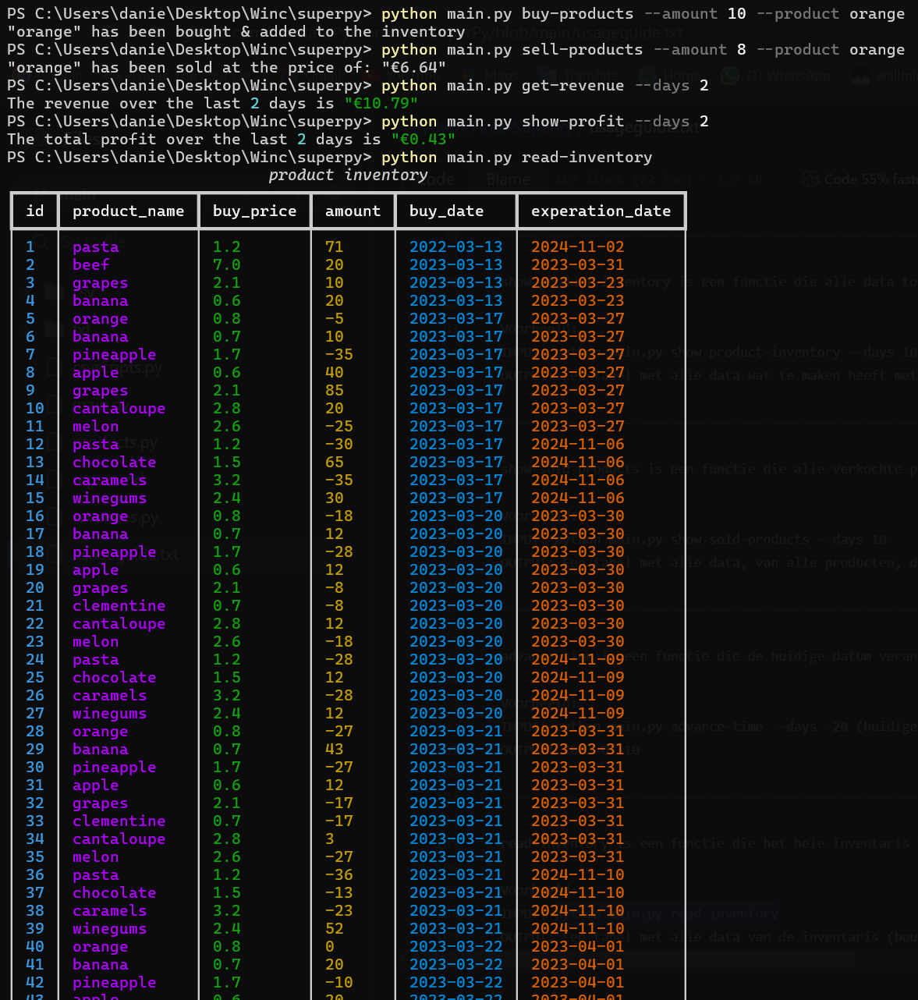

Superpy

Superpy is a program designed to manage inventory for a grocery store. It features a set of built-in CLI commands capable of various tasks such as purchasing new products, selling items, checking inventory levels, and analyzing profits or losses. Developed in Python, Superpy utilizes Pandas to efficiently filter and extract specific data from CSV files. Additionally, the program employs argparse to generate tailored commands for the CLI.